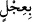
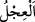

bir kısım mahzuf cümlelerin açıklamasının yapıldığı kasdedilir. __WORD__ kelimesinin
başındaki bâ harfi ise __WORD__ (câe) fiilini müteaddi kılmak için getirilmiştir. __WORD__ (ıcl),
ineğin yavrusuna verilen isimdir. Hz. İbrahim (a.s), misâfirlerine ikramda acele etmek
için bir öküz veya ineği keseceğine, acele hazırlayabilme düşüncesiyle danayı kesip
pişirip getirmiştir. Zaten “ıcl” acele etmek anlamındadır. Buzağıya “semîn” denmesinin
sebebi de, onun semiz bir ineğin yavrusu olmasıdır. Mânâ şöyledir: İbrahim (a.s) semiz
bir danayı boğazladı, onu kebap hâlinde kızartıp getirdi. Hayvanlarının çoğu inek
olduğu için onların yavrusundan semiz olanını tercih etti ki ikramı ziyadeli ve güzel
olsun.
27. Onların önüne koyup «yemez misiniz?» demişti.
“Onu, önlerine yaklaştırdı.” Alışıla geldiği üzere, yemeleri için dana kebabını
önlerine koydu, ama yemediler. Onların yemediklerini görünce, yemeğe el
uzatmamalarını görmezlikten gelerek ve onları teşvik maksadıyla bundan “yemez
misiniz?” dedi.
Bildirildiğine göre onlar, “Biz bedelsiz bir şey yemeyiz” deyince, Hz. İbrahim (a.s),
“Siz yiyin hele. Bedelini sonra verirsiniz” diye cevap vermişti. Bunun üzerine, “Bu
yemeğin bedeli nedir?” diye sormuşlar, İbrahim (a.s) da, “Yemeğe başlayınca
Bismillah, sonunda da Elhamdulillah derseniz olur” demiş, ama onlar onun sözünü
kesmişlerdi.
28. Derken onlardan korkmaya başladı. «Korkma» dediler ve ona bilgin bir oğlan
çocuğu müjdelediler.
“Onlardan içine bir korku düşürdü.” “Veces”, fısıltıyla seslenmek gibi gizli sese
verilen addır. Bu da insanın kendi içinde, yâni içinden konuşmasıyla olur. Onlardan
korkmasının sebebi de onların, kötülük yapmak için gelmiş düşmanlar olduğunu
zannetmesidir. Çünkü ancak kötülük ve zarar vermek için gelen kimseler kötülük
yapacakları kimsenin yemeğini yemezler.
Aynu’l-Meâni’de müellif, “Senin yemeğini yemeyen, sana güvence vermeyendir”
demiştir. Fakir (Bursevî) der ki: Onların selam vermeleri İbrahim (a.s)’a ters geliyor.
Çünkü ancak müslümanlar selam verir. Müslüman olan da ancak barışçı olur, düşmanlık
peşine düşmez. İşte İbrahim (a.s)’ın içine korku ve şaşkınlığın düşmesinin sebebi budur.